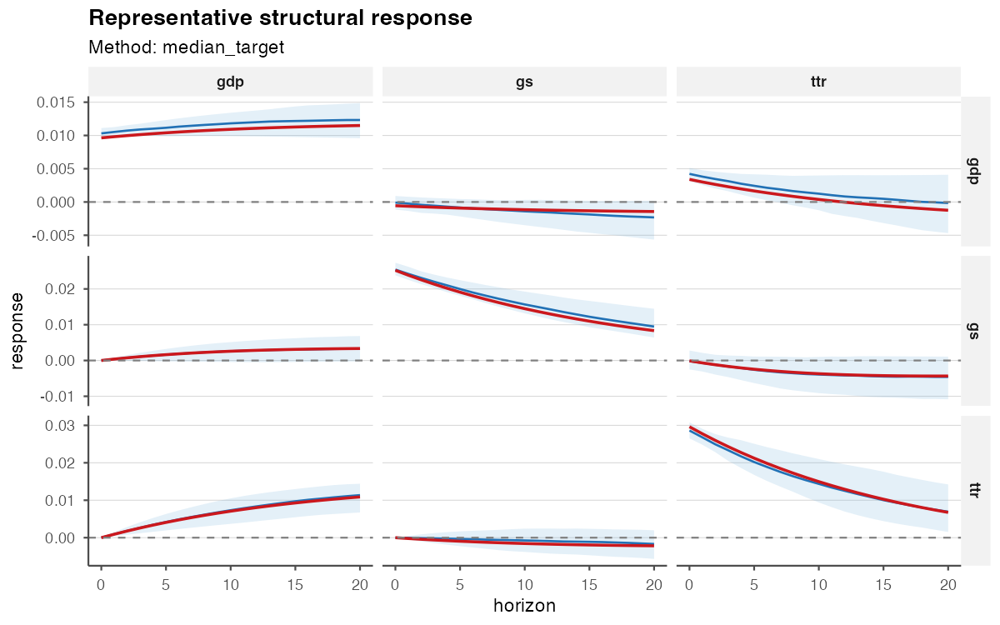
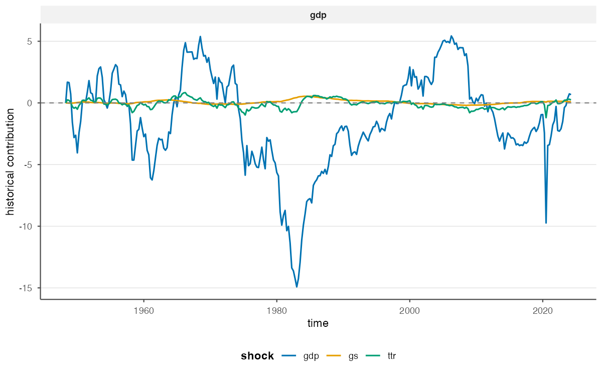
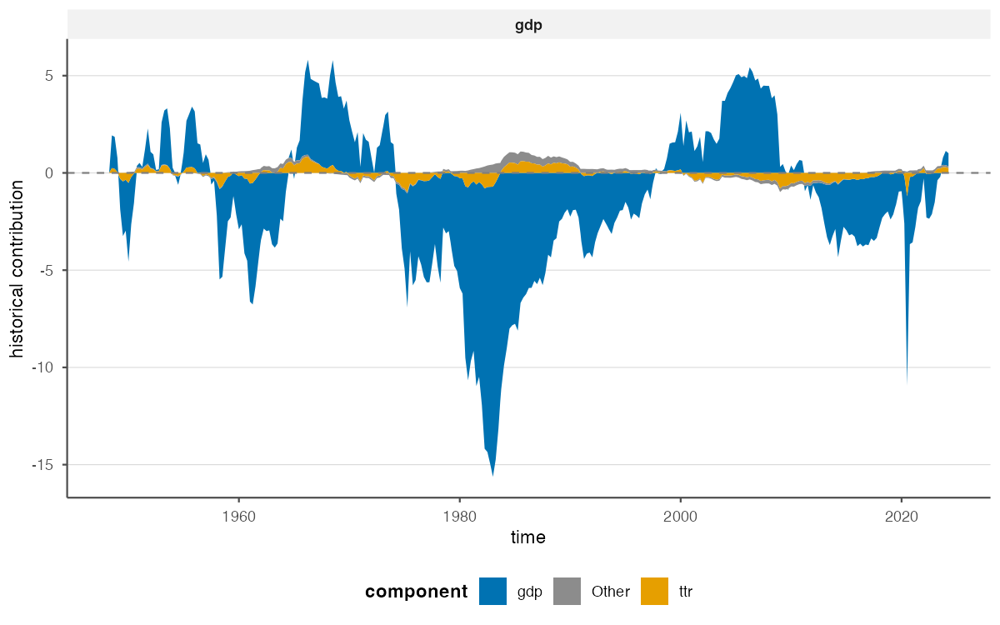
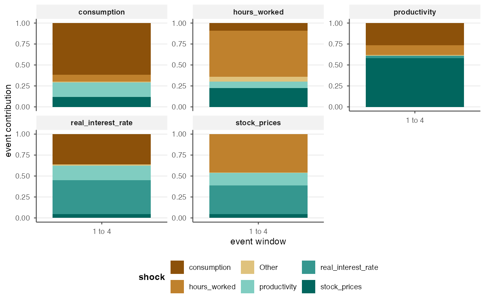
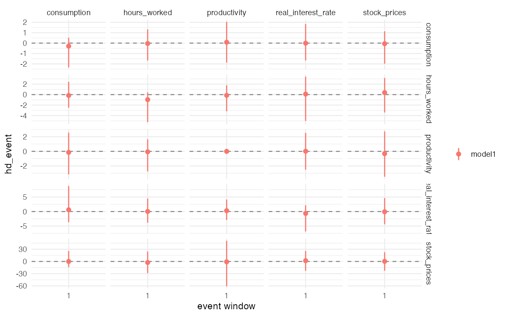
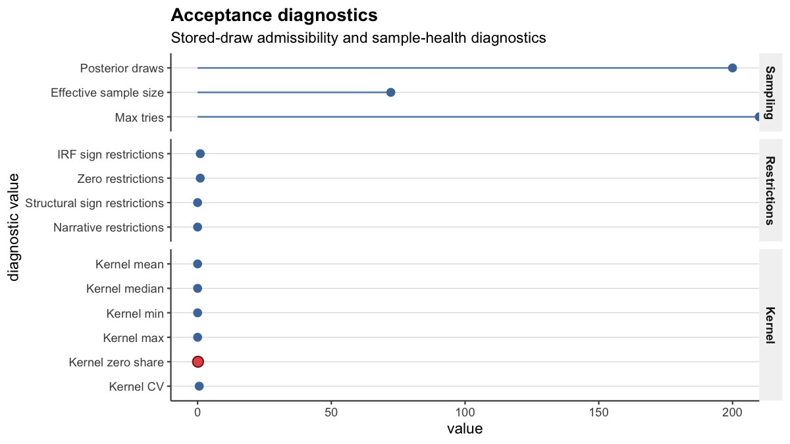

Post-Estimation Workflows in bsvarPost
Source:vignettes/post-estimation-workflows.Rmd
post-estimation-workflows.RmdThis vignette picks up where “Getting Started” left off. After
extracting impulse responses and CDMs, deeper analytical questions
remain: Which draw best represents the posterior as a whole? When
exactly does a spending shock peak, and how long does it last? Which
structural shocks drove observed fiscal dynamics? This vignette works
through those questions using the same us_fiscal_lsuw
dataset — quarterly US data on tax revenue (ttr),
government spending (gs), and output (gdp) —
comparing a one-lag baseline against a three-lag alternative
specification.
Representative-model summaries
Pointwise posterior medians may not correspond to any one coherent
structural draw. median_target_irf() finds the stored draw
whose IRF matrix is closest (in L2 distance) to the posterior median.
The result is a single self-consistent model that typifies the posterior
center.
rep_irf <- median_target_irf(post, horizon = 20)
summary(rep_irf)
#> # A tibble: 189 × 13
#> model object_type variable shock horizon mean median sd lower upper
#> <chr> <chr> <chr> <chr> <dbl> <dbl> <dbl> <dbl> <dbl> <dbl>
#> 1 model1 irf ttr ttr 0 0.0296 0.0296 NA 0.0296 0.0296
#> 2 model1 irf ttr ttr 1 0.0277 0.0277 NA 0.0277 0.0277
#> 3 model1 irf ttr ttr 2 0.0260 0.0260 NA 0.0260 0.0260
#> 4 model1 irf ttr ttr 3 0.0243 0.0243 NA 0.0243 0.0243
#> 5 model1 irf ttr ttr 4 0.0227 0.0227 NA 0.0227 0.0227
#> 6 model1 irf ttr ttr 5 0.0212 0.0212 NA 0.0212 0.0212
#> 7 model1 irf ttr ttr 6 0.0198 0.0198 NA 0.0198 0.0198
#> 8 model1 irf ttr ttr 7 0.0185 0.0185 NA 0.0185 0.0185
#> 9 model1 irf ttr ttr 8 0.0173 0.0173 NA 0.0173 0.0173
#> 10 model1 irf ttr ttr 9 0.0161 0.0161 NA 0.0161 0.0161
#> # ℹ 179 more rows
#> # ℹ 3 more variables: draw_index <int>, method <chr>, score <dbl>The draw_index slot records which posterior draw was
selected. This can be used to extract other quantities (CDMs, FEVD) from
the same draw for a fully coherent representative model.
A pre-rendered figure from the same posterior at the full S = 200 resolution:

The representative IRF for the gs spending shock shows
the typical fiscal transmission shape: an immediate positive effect on
government spending itself, with the gdp response peaking a
few quarters later.
Response timing summaries
Researchers often need to report precisely when effects
arrive and how long they persist. bsvarPost
provides four timing summaries, each with full posterior
uncertainty.
Peak response — at what horizon does the fiscal
spending shock produce the largest gdp effect?
peak_response(post, type = "irf", horizon = 20, variables = 3, shocks = 2)
#> # A tibble: 1 × 14
#> model object_type variable shock mean_value median_value sd_value lower_value
#> <chr> <chr> <chr> <chr> <dbl> <dbl> <dbl> <dbl>
#> 1 model1 peak_irf gdp gs 0.0379 -0.0000250 0.537 -0.00114
#> # ℹ 6 more variables: upper_value <dbl>, mean_horizon <dbl>,
#> # median_horizon <dbl>, sd_horizon <dbl>, lower_horizon <dbl>,
#> # upper_horizon <dbl>Duration response — how many quarters does the cumulative multiplier remain positive?
duration_response(
post,
type = "cdm",
horizon = 20,
variables = 3,
shocks = 2,
relation = ">",
value = 0,
mode = "total"
)
#> # A tibble: 1 × 12
#> model object_type variable shock relation threshold mode mean_duration
#> <chr> <chr> <chr> <chr> <chr> <dbl> <chr> <dbl>
#> 1 model1 duration_cdm gdp gs > 0 total 4.10
#> # ℹ 4 more variables: median_duration <dbl>, sd_duration <dbl>,
#> # lower_duration <dbl>, upper_duration <dbl>Half-life — how quickly does the impulse response decay from its peak?
half_life_response(
post,
type = "irf",
horizon = 20,
variables = 3,
shocks = 2,
baseline = "peak"
)
#> # A tibble: 1 × 12
#> model object_type variable shock fraction baseline mean_half_life
#> <chr> <chr> <chr> <chr> <dbl> <chr> <dbl>
#> 1 model1 half_life_irf gdp gs 0.5 peak 5.67
#> # ℹ 5 more variables: median_half_life <dbl>, sd_half_life <dbl>,
#> # lower_half_life <dbl>, upper_half_life <dbl>, reached_prob <dbl>Time to threshold — when does the cumulative multiplier first exceed zero?
time_to_threshold(
post,
type = "cdm",
horizon = 20,
variables = 3,
shocks = 2,
relation = ">",
value = 0
)
#> # A tibble: 1 × 12
#> model object_type variable shock relation threshold mean_horizon
#> <chr> <chr> <chr> <chr> <chr> <dbl> <dbl>
#> 1 model1 time_to_threshold_cdm gdp gs > 0 0.351
#> # ℹ 5 more variables: median_horizon <dbl>, sd_horizon <dbl>,
#> # lower_horizon <dbl>, upper_horizon <dbl>, reached_prob <dbl>These four summaries characterise when the fiscal spending effect arrives, how large it becomes, and how quickly it dissipates — the standard set of timing statistics for fiscal multiplier papers.
Comparing response summaries
Does the estimated timing change under a three-lag specification? The
compare_* helpers place both posteriors side by side.
cmp_peak <- compare_peak_response(
baseline = post,
alternative = post_alt,
type = "irf",
horizon = 20,
variables = 3,
shocks = 2
)
cmp_peak
#> # A tibble: 2 × 14
#> model object_type variable shock mean_value median_value sd_value lower_value
#> <chr> <chr> <chr> <chr> <dbl> <dbl> <dbl> <dbl>
#> 1 basel… peak_irf gdp gs 0.0379 -0.0000250 5.37e-1 -0.00114
#> 2 alter… peak_irf gdp gs 66131. 0.000115 9.35e+5 -0.000904
#> # ℹ 6 more variables: upper_value <dbl>, mean_horizon <dbl>,
#> # median_horizon <dbl>, sd_horizon <dbl>, lower_horizon <dbl>,
#> # upper_horizon <dbl>
compare_duration_response(
baseline = post,
alternative = post_alt,
type = "cdm",
horizon = 20,
variables = 3,
shocks = 2,
relation = ">",
value = 0
)
#> # A tibble: 2 × 12
#> model object_type variable shock relation threshold mode mean_duration
#> <chr> <chr> <chr> <chr> <chr> <dbl> <chr> <dbl>
#> 1 baseline duration_cdm gdp gs > 0 cons… 3.95
#> 2 alternative duration_cdm gdp gs > 0 cons… 4.16
#> # ℹ 4 more variables: median_duration <dbl>, sd_duration <dbl>,
#> # lower_duration <dbl>, upper_duration <dbl>as_kable() formats any bsvar_post_tbl as a
compact knitr::kable table ready for Rmd reports.
as_kable(cmp_peak, preset = "compact")| Model | Variable | Shock | Mean value | Median value | Lower value | Upper value | Mean horizon | Median horizon | Lower horizon | Upper horizon |
|---|---|---|---|---|---|---|---|---|---|---|
| baseline | gdp | gs | 3.791410e-02 | -0.0000250 | -0.0011445 | 0.0009886 | 1.105 | 0 | 0 | 10.5 |
| alternative | gdp | gs | 6.613149e+04 | 0.0001149 | -0.0009040 | 0.0033801 | 4.740 | 1 | 0 | 20.0 |
The three-lag alternative typically shows a later peak with wider credible bands, reflecting the richer lag dynamics.
Historical decomposition workflows
Historical decompositions (HD) answer two complementary questions: how do structural shock contributions evolve over the full sample, and how do those same contributions aggregate over a selected event window?
Start with the full-sample HD object. tidy_hd() returns
the contribution of each structural shock to each variable at each point
in time, which then feeds the dedicated plotting helpers.
hd_full <- tidy_hd(post)
plot_hd_overlay(post, variables = "gdp", top_n = 3)
plot_hd_stacked(post, variables = "gdp", top_n = 3)
plot_hd_total(post, variables = "gdp", shocks = c("gs", "ttr"))
plot_hd_lines(post, variables = "gdp", top_n = 3)Use plot_hd_overlay() first when you want to compare how
the main shock contributions move over time within one variable. This is
the best first-look diagnostic because it keeps the contribution paths
in a common panel without mixing in the raw observed level.
A pre-rendered full-sample HD overlay plot from the same S = 200 posterior:

plot_hd_stacked() then gives the composition view over
time. By default it shows the stacked structural shock contributions;
add include_baseline = TRUE when you want the explicit
non-shock reconstruction term as well.

plot_hd_total() plays a different role: it compares the
observed series to the reconstructed decomposition total, so it is the
natural validation view once the main shock drivers are clear.
When overlay and stacked views become too compressed,
plot_hd_lines() gives the detailed inspection view by
separating the component paths rather than forcing them into one
panel.
After the full-sample HD plots have identified a period of interest,
move to the event-window summaries. tidy_hd_event()
aggregates those contributions over a chosen window.
The us_fiscal_lsuw sample begins in 1948. To examine
which shocks drove fiscal dynamics in the first year (four quarters:
1948.25 through 1948.75):
hd_event <- tidy_hd_event(post, start = "1948.25", end = "1948.75")
head(hd_event)
#> # A tibble: 6 × 11
#> model object_type variable shock event_start event_end mean median
#> <chr> <chr> <chr> <chr> <chr> <chr> <dbl> <dbl>
#> 1 model1 hd_event gdp gdp 1948.25 1948.75 3.28 3.32
#> 2 model1 hd_event gs gdp 1948.25 1948.75 0.0116 0.000610
#> 3 model1 hd_event ttr gdp 1948.25 1948.75 -0.282 -0.289
#> 4 model1 hd_event gdp gs 1948.25 1948.75 -0.0295 -0.0188
#> 5 model1 hd_event gs gs 1948.25 1948.75 -0.906 -0.880
#> 6 model1 hd_event ttr gs 1948.25 1948.75 0.00140 0.00680
#> # ℹ 3 more variables: sd <dbl>, lower <dbl>, upper <dbl>plot_hd_event() keeps the window summary in contribution
units, while plot_hd_event_share() converts the same event
into within-window shares. plot_hd_event_cumulative() shows
how those contributions accumulate inside the window, and
plot_hd_event_distribution() focuses on posterior
uncertainty for each shock.
shock_ranking() is the event-summary ranking tool: it
orders the structural shocks by their absolute contribution to a target
variable over the selected window. Which shock moved gdp
the most?
shock_ranking(post, start = "1948.25", end = "1948.75", ranking = "absolute")
#> # A tibble: 9 × 14
#> model object_type variable shock event_start event_end mean median
#> <chr> <chr> <chr> <chr> <chr> <chr> <dbl> <dbl>
#> 1 model1 hd_event gdp gdp 1948.25 1948.75 3.28 3.32
#> 2 model1 hd_event gdp ttr 1948.25 1948.75 0.520 0.458
#> 3 model1 hd_event gdp gs 1948.25 1948.75 -0.0295 -0.0188
#> 4 model1 hd_event gs gs 1948.25 1948.75 -0.906 -0.880
#> 5 model1 hd_event gs ttr 1948.25 1948.75 0.0646 0.00766
#> 6 model1 hd_event gs gdp 1948.25 1948.75 0.0116 0.000610
#> 7 model1 hd_event ttr ttr 1948.25 1948.75 -7.94 -8.01
#> 8 model1 hd_event ttr gdp 1948.25 1948.75 -0.282 -0.289
#> 9 model1 hd_event ttr gs 1948.25 1948.75 0.00140 0.00680
#> # ℹ 6 more variables: sd <dbl>, lower <dbl>, upper <dbl>, ranking <chr>,
#> # rank_score <dbl>, rank <int>For a composition-oriented event view,
plot_hd_event_share() rescales the same event-window
contributions into shares:
plot_hd_event(post, start = "1948.25", end = "1948.75")
plot_hd_event_share(post, start = "1948.25", end = "1948.75", top_n = 3)
plot_hd_event_cumulative(post, start = "1948.25", end = "1948.75", top_n = 3)
plot_hd_event_distribution(post, start = "1948.25", end = "1948.75", top_n = 3)And a pre-rendered event-share composition plot:

A pre-rendered HD event figure from a richer S = 200 run:

Publication-ready reporting
All bsvarPost outputs are bsvar_post_tbl
data frames and accept the same family of reporting helpers.
knitr table (always available):
| Model | Variable | Shock | Horizon | Mean | Median | Lower | Upper |
|---|---|---|---|---|---|---|---|
| model1 | ttr | ttr | 0 | 0.030 | 0.030 | 0.030 | 0.030 |
| model1 | ttr | ttr | 1 | 0.028 | 0.028 | 0.028 | 0.028 |
| model1 | ttr | ttr | 2 | 0.026 | 0.026 | 0.026 | 0.026 |
| model1 | ttr | ttr | 3 | 0.024 | 0.024 | 0.024 | 0.024 |
| model1 | ttr | ttr | 4 | 0.023 | 0.023 | 0.023 | 0.023 |
| model1 | ttr | ttr | 5 | 0.021 | 0.021 | 0.021 | 0.021 |
| model1 | ttr | ttr | 6 | 0.020 | 0.020 | 0.020 | 0.020 |
| model1 | ttr | ttr | 7 | 0.019 | 0.019 | 0.019 | 0.019 |
| model1 | ttr | ttr | 8 | 0.017 | 0.017 | 0.017 | 0.017 |
| model1 | ttr | ttr | 9 | 0.016 | 0.016 | 0.016 | 0.016 |
| model1 | ttr | ttr | 10 | 0.015 | 0.015 | 0.015 | 0.015 |
| model1 | ttr | ttr | 11 | 0.014 | 0.014 | 0.014 | 0.014 |
| model1 | ttr | ttr | 12 | 0.013 | 0.013 | 0.013 | 0.013 |
| model1 | ttr | ttr | 13 | 0.012 | 0.012 | 0.012 | 0.012 |
| model1 | ttr | ttr | 14 | 0.011 | 0.011 | 0.011 | 0.011 |
| model1 | ttr | ttr | 15 | 0.010 | 0.010 | 0.010 | 0.010 |
| model1 | ttr | ttr | 16 | 0.009 | 0.009 | 0.009 | 0.009 |
| model1 | ttr | ttr | 17 | 0.009 | 0.009 | 0.009 | 0.009 |
| model1 | ttr | ttr | 18 | 0.008 | 0.008 | 0.008 | 0.008 |
| model1 | ttr | ttr | 19 | 0.007 | 0.007 | 0.007 | 0.007 |
| model1 | ttr | ttr | 20 | 0.007 | 0.007 | 0.007 | 0.007 |
| model1 | ttr | gs | 0 | 0.000 | 0.000 | 0.000 | 0.000 |
| model1 | ttr | gs | 1 | 0.000 | 0.000 | 0.000 | 0.000 |
| model1 | ttr | gs | 2 | 0.000 | 0.000 | 0.000 | 0.000 |
| model1 | ttr | gs | 3 | -0.001 | -0.001 | -0.001 | -0.001 |
| model1 | ttr | gs | 4 | -0.001 | -0.001 | -0.001 | -0.001 |
| model1 | ttr | gs | 5 | -0.001 | -0.001 | -0.001 | -0.001 |
| model1 | ttr | gs | 6 | -0.001 | -0.001 | -0.001 | -0.001 |
| model1 | ttr | gs | 7 | -0.001 | -0.001 | -0.001 | -0.001 |
| model1 | ttr | gs | 8 | -0.001 | -0.001 | -0.001 | -0.001 |
| model1 | ttr | gs | 9 | -0.001 | -0.001 | -0.001 | -0.001 |
| model1 | ttr | gs | 10 | -0.002 | -0.002 | -0.002 | -0.002 |
| model1 | ttr | gs | 11 | -0.002 | -0.002 | -0.002 | -0.002 |
| model1 | ttr | gs | 12 | -0.002 | -0.002 | -0.002 | -0.002 |
| model1 | ttr | gs | 13 | -0.002 | -0.002 | -0.002 | -0.002 |
| model1 | ttr | gs | 14 | -0.002 | -0.002 | -0.002 | -0.002 |
| model1 | ttr | gs | 15 | -0.002 | -0.002 | -0.002 | -0.002 |
| model1 | ttr | gs | 16 | -0.002 | -0.002 | -0.002 | -0.002 |
| model1 | ttr | gs | 17 | -0.002 | -0.002 | -0.002 | -0.002 |
| model1 | ttr | gs | 18 | -0.002 | -0.002 | -0.002 | -0.002 |
| model1 | ttr | gs | 19 | -0.002 | -0.002 | -0.002 | -0.002 |
| model1 | ttr | gs | 20 | -0.002 | -0.002 | -0.002 | -0.002 |
| model1 | ttr | gdp | 0 | 0.000 | 0.000 | 0.000 | 0.000 |
| model1 | ttr | gdp | 1 | 0.001 | 0.001 | 0.001 | 0.001 |
| model1 | ttr | gdp | 2 | 0.002 | 0.002 | 0.002 | 0.002 |
| model1 | ttr | gdp | 3 | 0.003 | 0.003 | 0.003 | 0.003 |
| model1 | ttr | gdp | 4 | 0.003 | 0.003 | 0.003 | 0.003 |
| model1 | ttr | gdp | 5 | 0.004 | 0.004 | 0.004 | 0.004 |
| model1 | ttr | gdp | 6 | 0.005 | 0.005 | 0.005 | 0.005 |
| model1 | ttr | gdp | 7 | 0.005 | 0.005 | 0.005 | 0.005 |
| model1 | ttr | gdp | 8 | 0.006 | 0.006 | 0.006 | 0.006 |
| model1 | ttr | gdp | 9 | 0.007 | 0.007 | 0.007 | 0.007 |
| model1 | ttr | gdp | 10 | 0.007 | 0.007 | 0.007 | 0.007 |
| model1 | ttr | gdp | 11 | 0.008 | 0.008 | 0.008 | 0.008 |
| model1 | ttr | gdp | 12 | 0.008 | 0.008 | 0.008 | 0.008 |
| model1 | ttr | gdp | 13 | 0.008 | 0.008 | 0.008 | 0.008 |
| model1 | ttr | gdp | 14 | 0.009 | 0.009 | 0.009 | 0.009 |
| model1 | ttr | gdp | 15 | 0.009 | 0.009 | 0.009 | 0.009 |
| model1 | ttr | gdp | 16 | 0.010 | 0.010 | 0.010 | 0.010 |
| model1 | ttr | gdp | 17 | 0.010 | 0.010 | 0.010 | 0.010 |
| model1 | ttr | gdp | 18 | 0.010 | 0.010 | 0.010 | 0.010 |
| model1 | ttr | gdp | 19 | 0.011 | 0.011 | 0.011 | 0.011 |
| model1 | ttr | gdp | 20 | 0.011 | 0.011 | 0.011 | 0.011 |
| model1 | gs | ttr | 0 | 0.000 | 0.000 | 0.000 | 0.000 |
| model1 | gs | ttr | 1 | -0.001 | -0.001 | -0.001 | -0.001 |
| model1 | gs | ttr | 2 | -0.001 | -0.001 | -0.001 | -0.001 |
| model1 | gs | ttr | 3 | -0.002 | -0.002 | -0.002 | -0.002 |
| model1 | gs | ttr | 4 | -0.002 | -0.002 | -0.002 | -0.002 |
| model1 | gs | ttr | 5 | -0.002 | -0.002 | -0.002 | -0.002 |
| model1 | gs | ttr | 6 | -0.003 | -0.003 | -0.003 | -0.003 |
| model1 | gs | ttr | 7 | -0.003 | -0.003 | -0.003 | -0.003 |
| model1 | gs | ttr | 8 | -0.003 | -0.003 | -0.003 | -0.003 |
| model1 | gs | ttr | 9 | -0.004 | -0.004 | -0.004 | -0.004 |
| model1 | gs | ttr | 10 | -0.004 | -0.004 | -0.004 | -0.004 |
| model1 | gs | ttr | 11 | -0.004 | -0.004 | -0.004 | -0.004 |
| model1 | gs | ttr | 12 | -0.004 | -0.004 | -0.004 | -0.004 |
| model1 | gs | ttr | 13 | -0.004 | -0.004 | -0.004 | -0.004 |
| model1 | gs | ttr | 14 | -0.004 | -0.004 | -0.004 | -0.004 |
| model1 | gs | ttr | 15 | -0.004 | -0.004 | -0.004 | -0.004 |
| model1 | gs | ttr | 16 | -0.004 | -0.004 | -0.004 | -0.004 |
| model1 | gs | ttr | 17 | -0.004 | -0.004 | -0.004 | -0.004 |
| model1 | gs | ttr | 18 | -0.004 | -0.004 | -0.004 | -0.004 |
| model1 | gs | ttr | 19 | -0.004 | -0.004 | -0.004 | -0.004 |
| model1 | gs | ttr | 20 | -0.004 | -0.004 | -0.004 | -0.004 |
| model1 | gs | gs | 0 | 0.025 | 0.025 | 0.025 | 0.025 |
| model1 | gs | gs | 1 | 0.024 | 0.024 | 0.024 | 0.024 |
| model1 | gs | gs | 2 | 0.023 | 0.023 | 0.023 | 0.023 |
| model1 | gs | gs | 3 | 0.021 | 0.021 | 0.021 | 0.021 |
| model1 | gs | gs | 4 | 0.020 | 0.020 | 0.020 | 0.020 |
| model1 | gs | gs | 5 | 0.019 | 0.019 | 0.019 | 0.019 |
| model1 | gs | gs | 6 | 0.018 | 0.018 | 0.018 | 0.018 |
| model1 | gs | gs | 7 | 0.017 | 0.017 | 0.017 | 0.017 |
| model1 | gs | gs | 8 | 0.016 | 0.016 | 0.016 | 0.016 |
| model1 | gs | gs | 9 | 0.015 | 0.015 | 0.015 | 0.015 |
| model1 | gs | gs | 10 | 0.014 | 0.014 | 0.014 | 0.014 |
| model1 | gs | gs | 11 | 0.014 | 0.014 | 0.014 | 0.014 |
| model1 | gs | gs | 12 | 0.013 | 0.013 | 0.013 | 0.013 |
| model1 | gs | gs | 13 | 0.012 | 0.012 | 0.012 | 0.012 |
| model1 | gs | gs | 14 | 0.012 | 0.012 | 0.012 | 0.012 |
| model1 | gs | gs | 15 | 0.011 | 0.011 | 0.011 | 0.011 |
| model1 | gs | gs | 16 | 0.010 | 0.010 | 0.010 | 0.010 |
| model1 | gs | gs | 17 | 0.010 | 0.010 | 0.010 | 0.010 |
| model1 | gs | gs | 18 | 0.009 | 0.009 | 0.009 | 0.009 |
| model1 | gs | gs | 19 | 0.009 | 0.009 | 0.009 | 0.009 |
| model1 | gs | gs | 20 | 0.008 | 0.008 | 0.008 | 0.008 |
| model1 | gs | gdp | 0 | 0.000 | 0.000 | 0.000 | 0.000 |
| model1 | gs | gdp | 1 | 0.000 | 0.000 | 0.000 | 0.000 |
| model1 | gs | gdp | 2 | 0.001 | 0.001 | 0.001 | 0.001 |
| model1 | gs | gdp | 3 | 0.001 | 0.001 | 0.001 | 0.001 |
| model1 | gs | gdp | 4 | 0.001 | 0.001 | 0.001 | 0.001 |
| model1 | gs | gdp | 5 | 0.002 | 0.002 | 0.002 | 0.002 |
| model1 | gs | gdp | 6 | 0.002 | 0.002 | 0.002 | 0.002 |
| model1 | gs | gdp | 7 | 0.002 | 0.002 | 0.002 | 0.002 |
| model1 | gs | gdp | 8 | 0.002 | 0.002 | 0.002 | 0.002 |
| model1 | gs | gdp | 9 | 0.002 | 0.002 | 0.002 | 0.002 |
| model1 | gs | gdp | 10 | 0.003 | 0.003 | 0.003 | 0.003 |
| model1 | gs | gdp | 11 | 0.003 | 0.003 | 0.003 | 0.003 |
| model1 | gs | gdp | 12 | 0.003 | 0.003 | 0.003 | 0.003 |
| model1 | gs | gdp | 13 | 0.003 | 0.003 | 0.003 | 0.003 |
| model1 | gs | gdp | 14 | 0.003 | 0.003 | 0.003 | 0.003 |
| model1 | gs | gdp | 15 | 0.003 | 0.003 | 0.003 | 0.003 |
| model1 | gs | gdp | 16 | 0.003 | 0.003 | 0.003 | 0.003 |
| model1 | gs | gdp | 17 | 0.003 | 0.003 | 0.003 | 0.003 |
| model1 | gs | gdp | 18 | 0.003 | 0.003 | 0.003 | 0.003 |
| model1 | gs | gdp | 19 | 0.003 | 0.003 | 0.003 | 0.003 |
| model1 | gs | gdp | 20 | 0.003 | 0.003 | 0.003 | 0.003 |
| model1 | gdp | ttr | 0 | 0.003 | 0.003 | 0.003 | 0.003 |
| model1 | gdp | ttr | 1 | 0.003 | 0.003 | 0.003 | 0.003 |
| model1 | gdp | ttr | 2 | 0.003 | 0.003 | 0.003 | 0.003 |
| model1 | gdp | ttr | 3 | 0.002 | 0.002 | 0.002 | 0.002 |
| model1 | gdp | ttr | 4 | 0.002 | 0.002 | 0.002 | 0.002 |
| model1 | gdp | ttr | 5 | 0.002 | 0.002 | 0.002 | 0.002 |
| model1 | gdp | ttr | 6 | 0.001 | 0.001 | 0.001 | 0.001 |
| model1 | gdp | ttr | 7 | 0.001 | 0.001 | 0.001 | 0.001 |
| model1 | gdp | ttr | 8 | 0.001 | 0.001 | 0.001 | 0.001 |
| model1 | gdp | ttr | 9 | 0.001 | 0.001 | 0.001 | 0.001 |
| model1 | gdp | ttr | 10 | 0.000 | 0.000 | 0.000 | 0.000 |
| model1 | gdp | ttr | 11 | 0.000 | 0.000 | 0.000 | 0.000 |
| model1 | gdp | ttr | 12 | 0.000 | 0.000 | 0.000 | 0.000 |
| model1 | gdp | ttr | 13 | 0.000 | 0.000 | 0.000 | 0.000 |
| model1 | gdp | ttr | 14 | 0.000 | 0.000 | 0.000 | 0.000 |
| model1 | gdp | ttr | 15 | -0.001 | -0.001 | -0.001 | -0.001 |
| model1 | gdp | ttr | 16 | -0.001 | -0.001 | -0.001 | -0.001 |
| model1 | gdp | ttr | 17 | -0.001 | -0.001 | -0.001 | -0.001 |
| model1 | gdp | ttr | 18 | -0.001 | -0.001 | -0.001 | -0.001 |
| model1 | gdp | ttr | 19 | -0.001 | -0.001 | -0.001 | -0.001 |
| model1 | gdp | ttr | 20 | -0.001 | -0.001 | -0.001 | -0.001 |
| model1 | gdp | gs | 0 | -0.001 | -0.001 | -0.001 | -0.001 |
| model1 | gdp | gs | 1 | -0.001 | -0.001 | -0.001 | -0.001 |
| model1 | gdp | gs | 2 | -0.001 | -0.001 | -0.001 | -0.001 |
| model1 | gdp | gs | 3 | -0.001 | -0.001 | -0.001 | -0.001 |
| model1 | gdp | gs | 4 | -0.001 | -0.001 | -0.001 | -0.001 |
| model1 | gdp | gs | 5 | -0.001 | -0.001 | -0.001 | -0.001 |
| model1 | gdp | gs | 6 | -0.001 | -0.001 | -0.001 | -0.001 |
| model1 | gdp | gs | 7 | -0.001 | -0.001 | -0.001 | -0.001 |
| model1 | gdp | gs | 8 | -0.001 | -0.001 | -0.001 | -0.001 |
| model1 | gdp | gs | 9 | -0.001 | -0.001 | -0.001 | -0.001 |
| model1 | gdp | gs | 10 | -0.001 | -0.001 | -0.001 | -0.001 |
| model1 | gdp | gs | 11 | -0.001 | -0.001 | -0.001 | -0.001 |
| model1 | gdp | gs | 12 | -0.001 | -0.001 | -0.001 | -0.001 |
| model1 | gdp | gs | 13 | -0.001 | -0.001 | -0.001 | -0.001 |
| model1 | gdp | gs | 14 | -0.001 | -0.001 | -0.001 | -0.001 |
| model1 | gdp | gs | 15 | -0.001 | -0.001 | -0.001 | -0.001 |
| model1 | gdp | gs | 16 | -0.001 | -0.001 | -0.001 | -0.001 |
| model1 | gdp | gs | 17 | -0.001 | -0.001 | -0.001 | -0.001 |
| model1 | gdp | gs | 18 | -0.001 | -0.001 | -0.001 | -0.001 |
| model1 | gdp | gs | 19 | -0.001 | -0.001 | -0.001 | -0.001 |
| model1 | gdp | gs | 20 | -0.001 | -0.001 | -0.001 | -0.001 |
| model1 | gdp | gdp | 0 | 0.010 | 0.010 | 0.010 | 0.010 |
| model1 | gdp | gdp | 1 | 0.010 | 0.010 | 0.010 | 0.010 |
| model1 | gdp | gdp | 2 | 0.010 | 0.010 | 0.010 | 0.010 |
| model1 | gdp | gdp | 3 | 0.010 | 0.010 | 0.010 | 0.010 |
| model1 | gdp | gdp | 4 | 0.010 | 0.010 | 0.010 | 0.010 |
| model1 | gdp | gdp | 5 | 0.010 | 0.010 | 0.010 | 0.010 |
| model1 | gdp | gdp | 6 | 0.011 | 0.011 | 0.011 | 0.011 |
| model1 | gdp | gdp | 7 | 0.011 | 0.011 | 0.011 | 0.011 |
| model1 | gdp | gdp | 8 | 0.011 | 0.011 | 0.011 | 0.011 |
| model1 | gdp | gdp | 9 | 0.011 | 0.011 | 0.011 | 0.011 |
| model1 | gdp | gdp | 10 | 0.011 | 0.011 | 0.011 | 0.011 |
| model1 | gdp | gdp | 11 | 0.011 | 0.011 | 0.011 | 0.011 |
| model1 | gdp | gdp | 12 | 0.011 | 0.011 | 0.011 | 0.011 |
| model1 | gdp | gdp | 13 | 0.011 | 0.011 | 0.011 | 0.011 |
| model1 | gdp | gdp | 14 | 0.011 | 0.011 | 0.011 | 0.011 |
| model1 | gdp | gdp | 15 | 0.011 | 0.011 | 0.011 | 0.011 |
| model1 | gdp | gdp | 16 | 0.011 | 0.011 | 0.011 | 0.011 |
| model1 | gdp | gdp | 17 | 0.011 | 0.011 | 0.011 | 0.011 |
| model1 | gdp | gdp | 18 | 0.011 | 0.011 | 0.011 | 0.011 |
| model1 | gdp | gdp | 19 | 0.011 | 0.011 | 0.011 | 0.011 |
| model1 | gdp | gdp | 20 | 0.011 | 0.011 | 0.011 | 0.011 |
gt table (when the gt package is
installed):
as_gt(cmp_peak, caption = "Peak response: 1-lag vs 3-lag", digits = 3,
preset = "compact")| Peak response: 1-lag vs 3-lag | ||||||||||
| Model | Variable | Shock | Mean value | Median value | Lower value | Upper value | Mean horizon | Median horizon | Lower horizon | Upper horizon |
|---|---|---|---|---|---|---|---|---|---|---|
| baseline | gdp | gs | 0.038 | 0 | -0.001 | 0.001 | 1.105 | 0 | 0 | 10.5 |
| alternative | gdp | gs | 66131.493 | 0 | -0.001 | 0.003 | 4.740 | 1 | 0 | 20.0 |
flextable (when the flextable package
is installed):
as_flextable(cmp_peak, caption = "Peak response: 1-lag vs 3-lag", digits = 3,
preset = "compact")Model |
Variable |
Shock |
Mean value |
Median value |
Lower value |
Upper value |
Mean horizon |
Median horizon |
Lower horizon |
Upper horizon |
|---|---|---|---|---|---|---|---|---|---|---|
baseline |
gdp |
gs |
0.038 |
0 |
-0.001 |
0.001 |
1.105 |
0 |
0 |
10.5 |
alternative |
gdp |
gs |
66,131.493 |
0 |
-0.001 |
0.003 |
4.740 |
1 |
0 |
20.0 |
Publication plot — publish_bsvar_plot()
applies a paper-ready theme and returns the plot object for further
adjustment or direct saving.
publish_bsvar_plot(rep_irf, preset = "paper")A pre-rendered diagnostics figure demonstrating the publication styling layer:

This diagnostics plot is not an economic-effects plot. It summarizes
the health of the stored admissible-draw sample for the sign-restricted
model. Start with effective_sample_size and
kernel_zero_share: they tell you whether the accepted draws
contain enough effective information and whether a large share of the
admissible support is effectively degenerate. The restriction counts and
other kernel summaries then provide context for how demanding the
identification problem is.
Next steps
The Hypothesis Testing vignette covers formal
posterior probability statements — hypothesis_irf(),
joint_hypothesis_irf(), and simultaneous_irf()
— for testing sign and magnitude restrictions on the fiscal transmission
mechanism.